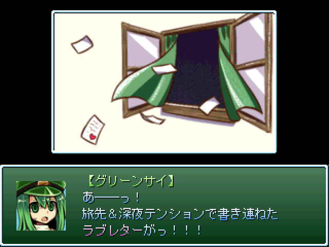

| No.35 このksgはプロモーションを含みます | |
|
 | |
| 作成ツクール：RPGツクール2000 | |
| ジャンル：ミニゲーム | |
| 作者名：lpre_ys | |
| ＜配信/動画投稿/翻訳＞ | |
| 備考：＜投票不可＞ | |
＜作者のコメント＞今年の9月頃に公開したツールの宣伝と ちょっとしたミニゲームです。 2週間で無からtkったヤツなんで内容はペラッペラです。 10分もあればクリアできますので、大作の合間にでも遊んでみてください。 隠しは……運ゲーなんで……。 初見想定テストプレイだと15分くらいで出せました。 ゲーム内にヒントは入れてますが、難しすぎるようであれば 年明けのどこかのタイミングで、SNSか何か使って攻略情報を公開します。 ->2025年12月28日ごろの更新にて ゲーム内で攻略情報が見れるようにしました。 詳細はreadme.txtをご確認ください。 | |
管理人から ミニゲームに自信のあるニキ達、来たれ。ちょっとした見るゲも楽しめそうでいいですね ミニゲームに自信のあるニキ達、来たれ。ちょっとした見るゲも楽しめそうでいいですね |
|
| ダウンロード(340kb:12/28更新) 感想掲示板 | |
| 前の作品 次の作品 / TOPへ戻る | |